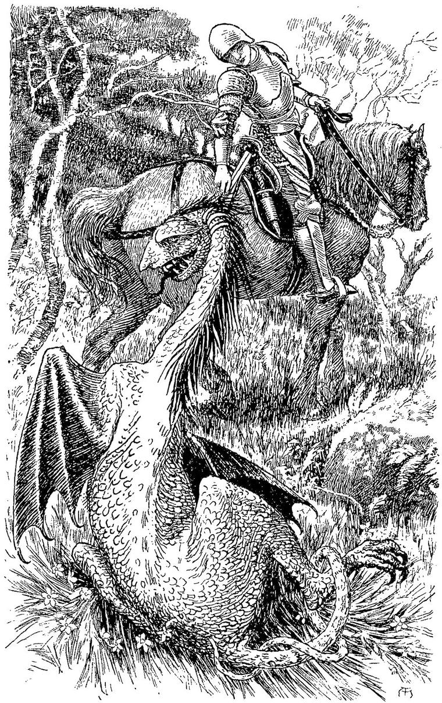

SIR PHILIP SIDNEY.
A full assurance given by lookes,
Continuall comfort in a face,
The lineaments of Gospel bookes.”
MATTHEW ROYDON, on Sir Philip Sidney.
I had not gone far, for I had but just lost sight of the hated tower, when a voice of another sort, sounding near or far, as the trees permitted or intercepted its passage, reached me. It was a full, deep, manly voice, but withal clear and melodious. Now it burst on the ear with a sudden swell, and anon, dying away as suddenly, seemed to come to me across a great space. Nevertheless, it drew nearer; till, at last, I could distinguish the words of the song, and get transient glimpses of the singer, between the columns of the trees. He came nearer, dawning upon me like a growing thought. He was a knight, armed from head to heel, mounted upon a strange-looking beast, whose form I could not understand. The words which I heard him sing were like these:
And eye be true;
Good blade out!
And ill shall rue.
Thou lackst no skill;
Well thy force
Hath matched my will.
With fiery breath,
At a blow,
Is still in death.
Tread fearlessly;
’Tis his corse
That burdens thee.
Is fierce at noon;
Thou and I
Will rest full soon.
New work will meet;
Till, at length,
Long rest is sweet.
And now horse and rider had arrived near enough for me to see, fastened by the long neck to the hinder part of the saddle, and trailing its hideous length on the ground behind, the body of a great dragon. It was no wonder that, with such a drag at his heels, the horse could make but slow progress, notwithstanding his evident dismay. The horrid, serpent-like head, with its black tongue, forked with red, hanging out of its jaws, dangled against the horse’s side. Its neck was covered with long blue hair, its sides with scales of green and gold. Its back was of corrugated skin, of a purple hue. Its belly was similar in nature, but its colour was leaden, dashed with blotches of livid blue. Its skinny, bat-like wings and its tail were of a dull gray. It was strange to see how so many gorgeous colours, so many curving lines, and such beautiful things as wings and hair and scales, combined to form the horrible creature, intense in ugliness.

The knight was passing me with a salutation; but, as I walked towards him, he reined up, and I stood by his stirrup. When I came near him, I saw to my surprise and pleasure likewise, although a sudden pain, like a birth of fire, sprang up in my heart, that it was the knight of the soiled armour, whom I knew before, and whom I had seen in the vision, with the lady of the marble. But I could have thrown my arms around him, because she loved him. This discovery only strengthened the resolution I had formed, before I recognised him, of offering myself to the knight, to wait upon him as a squire, for he seemed to be unattended. I made my request in as few words as possible. He hesitated for a moment, and looked at me thoughtfully. I saw that he suspected who I was, but that he continued uncertain of his suspicion. No doubt he was soon convinced of its truth; but all the time I was with him, not a word crossed his lips with reference to what he evidently concluded I wished to leave unnoticed, if not to keep concealed.
“Squire and knight should be friends,” said he: “can you take me by the hand?” And he held out the great gauntleted right hand. I grasped it willingly and strongly. Not a word more was said. The knight gave the sign to his horse, which again began his slow march, and I walked beside and a little behind.
We had not gone very far before we arrived at a little cottage; from which, as we drew near, a woman rushed out with the cry:
“My child! my child! have you found my child?”
“I have found her,” replied the knight, “but she is sorely hurt. I was forced to leave her with the hermit, as I returned. You will find her there, and I think she will get better. You see I have brought you a present. This wretch will not hurt you again.” And he undid the creature’s neck, and flung the frightful burden down by the cottage door.
The woman was now almost out of sight in the wood; but the husband stood at the door, with speechless thanks in his face.
“You must bury the monster,” said the knight. “If I had arrived a moment later, I should have been too late. But now you need not fear, for such a creature as this very rarely appears, in the same part, twice during a lifetime.”
“Will you not dismount and rest you, Sir Knight?” said the peasant, who had, by this time, recovered himself a little.
“That I will, thankfully,” said he; and, dismounting, he gave the reins to me, and told me to unbridle the horse, and lead him into the shade. “You need not tie him up,” he added; “he will not run away.”
When I returned, after obeying his orders, and entered the cottage, I saw the knight seated, without his helmet, and talking most familiarly with the simple host. I stood at the open door for a moment, and, gazing at him, inwardly justified the white lady in preferring him to me. A nobler countenance I never saw. Loving-kindness beamed from every line of his face. It seemed as if he would repay himself for the late arduous combat, by indulging in all the gentleness of a womanly heart. But when the talk ceased for a moment, he seemed to fall into a reverie. Then the exquisite curves of the upper lip vanished. The lip was lengthened and compressed at the same moment. You could have told that, within the lips, the teeth were firmly closed. The whole face grew stern and determined, all but fierce; only the eyes burned on like a holy sacrifice, uplift on a granite rock.
The woman entered, with her mangled child in her arms. She was pale as her little burden. She gazed, with a wild love and despairing tenderness, on the still, all but dead face, white and clear from loss of blood and terror.
The knight rose. The light that had been confined to his eyes, now shone from his whole countenance. He took the little thing in his arms, and, with the mother’s help, undressed her, and looked to her wounds. The tears flowed down his face as he did so. With tender hands he bound them up, kissed the pale cheek, and gave her back to her mother. When he went home, all his tale would be of the grief and joy of the parents; while to me, who had looked on, the gracious countenance of the armed man, beaming from the panoply of steel, over the seemingly dead child, while the powerful hands turned it and shifted it, and bound it, if possible even more gently than the mother’s, formed the centre of the story.
After we had partaken of the best they could give us, the knight took his leave, with a few parting instructions to the mother as to how she should treat the child.
I brought the knight his steed, held the stirrup while he mounted, and then followed him through the wood. The horse, delighted to be free of his hideous load, bounded beneath the weight of man and armour, and could hardly be restrained from galloping on. But the knight made him time his powers to mine, and so we went on for an hour or two. Then the knight dismounted, and compelled me to get into the saddle, saying: “Knight and squire must share the labour.”
Holding by the stirrup, he walked along by my side, heavily clad as he was, with apparent ease. As we went, he led a conversation, in which I took what humble part my sense of my condition would permit me.
“Somehow or other,” said he, “notwithstanding the beauty of this country of Faerie, in which we are, there is much that is wrong in it. If there are great splendours, there are corresponding horrors; heights and depths; beautiful women and awful fiends; noble men and weaklings. All a man has to do, is to better what he can. And if he will settle it with himself, that even renown and success are in themselves of no great value, and be content to be defeated, if so be that the fault is not his; and so go to his work with a cool brain and a strong will, he will get it done; and fare none the worse in the end, that he was not burdened with provision and precaution.”
“But he will not always come off well,” I ventured to say.
“Perhaps not,” rejoined the knight, “in the individual act; but the result of his lifetime will content him.”
“So it will fare with you, doubtless,” thought I; “but for me—-”
Venturing to resume the conversation after a pause, I said, hesitatingly:
“May I ask for what the little beggar-girl wanted your aid, when she came to your castle to find you?”
He looked at me for a moment in silence, and then said—
“I cannot help wondering how you know of that; but there is something about you quite strange enough to entitle you to the privilege of the country; namely, to go unquestioned. I, however, being only a man, such as you see me, am ready to tell you anything you like to ask me, as far as I can. The little beggar-girl came into the hall where I was sitting, and told me a very curious story, which I can only recollect very vaguely, it was so peculiar. What I can recall is, that she was sent to gather wings. As soon as she had gathered a pair of wings for herself, she was to fly away, she said, to the country she came from; but where that was, she could give no information.
“She said she had to beg her wings from the butterflies and moths; and wherever she begged, no one refused her. But she needed a great many of the wings of butterflies and moths to make a pair for her; and so she had to wander about day after day, looking for butterflies, and night after night, looking for moths; and then she begged for their wings. But the day before, she had come into a part of the forest, she said, where there were multitudes of splendid butterflies flitting about, with wings which were just fit to make the eyes in the shoulders of hers; and she knew she could have as many of them as she liked for the asking; but as soon as she began to beg, there came a great creature right up to her, and threw her down, and walked over her. When she got up, she saw the wood was full of these beings stalking about, and seeming to have nothing to do with each other. As soon as ever she began to beg, one of them walked over her; till at last in dismay, and in growing horror of the senseless creatures, she had run away to look for somebody to help her. I asked her what they were like. She said, like great men, made of wood, without knee-or elbow-joints, and without any noses or mouths or eyes in their faces. I laughed at the little maiden, thinking she was making child’s game of me; but, although she burst out laughing too, she persisted in asserting the truth of her story.”
“‘Only come, knight, come and see; I will lead you.’
“So I armed myself, to be ready for anything that might happen, and followed the child; for, though I could make nothing of her story, I could see she was a little human being in need of some help or other. As she walked before me, I looked attentively at her. Whether or not it was from being so often knocked down and walked over, I could not tell, but her clothes were very much torn, and in several places her white skin was peeping through. I thought she was hump-backed; but on looking more closely, I saw, through the tatters of her frock—do not laugh at me—a bunch on each shoulder, of the most gorgeous colours. Looking yet more closely, I saw that they were of the shape of folded wings, and were made of all kinds of butterfly-wings and moth-wings, crowded together like the feathers on the individual butterfly pinion; but, like them, most beautifully arranged, and producing a perfect harmony of colour and shade. I could now more easily believe the rest of her story; especially as I saw, every now and then, a certain heaving motion in the wings, as if they longed to be uplifted and outspread. But beneath her scanty garments complete wings could not be concealed, and indeed, from her own story, they were yet unfinished.
“After walking for two or three hours (how the little girl found her way, I could not imagine), we came to a part of the forest, the very air of which was quivering with the motions of multitudes of resplendent butterflies; as gorgeous in colour, as if the eyes of peacocks’ feathers had taken to flight, but of infinite variety of hue and form, only that the appearance of some kind of eye on each wing predominated. ‘There they are, there they are!’ cried the child, in a tone of victory mingled with terror. Except for this tone, I should have thought she referred to the butterflies, for I could see nothing else. But at that moment an enormous butterfly, whose wings had great eyes of blue surrounded by confused cloudy heaps of more dingy colouring, just like a break in the clouds on a stormy day towards evening, settled near us. The child instantly began murmuring: ‘Butterfly, butterfly, give me your wings’; when, the moment after, she fell to the ground, and began crying as if hurt. I drew my sword and heaved a great blow in the direction in which the child had fallen. It struck something, and instantly the most grotesque imitation of a man became visible. You see this Fairy Land is full of oddities and all sorts of incredibly ridiculous things, which a man is compelled to meet and treat as real existences, although all the time he feels foolish for doing so. This being, if being it could be called, was like a block of wood roughly hewn into the mere outlines of a man; and hardly so, for it had but head, body, legs, and arms—the head without a face, and the limbs utterly formless. I had hewn off one of its legs, but the two portions moved on as best they could, quite independent of each other; so that I had done no good. I ran after it, and clove it in twain from the head downwards; but it could not be convinced that its vocation was not to walk over people; for, as soon as the little girl began her begging again, all three parts came bustling up; and if I had not interposed my weight between her and them, she would have been trampled again under them. I saw that something else must be done. If the wood was full of the creatures, it would be an endless work to chop them so small that they could do no injury; and then, besides, the parts would be so numerous, that the butterflies would be in danger from the drift of flying chips. I served this one so, however; and then told the girl to beg again, and point out the direction in which one was coming. I was glad to find, however, that I could now see him myself, and wondered how they could have been invisible before. I would not allow him to walk over the child; but while I kept him off, and she began begging again, another appeared; and it was all I could do, from the weight of my armour, to protect her from the stupid, persevering efforts of the two. But suddenly the right plan occurred to me. I tripped one of them up, and, taking him by the legs, set him up on his head, with his heels against a tree. I was delighted to find he could not move. Meantime the poor child was walked over by the other, but it was for the last time. Whenever one appeared, I followed the same plan—tripped him up and set him on his head; and so the little beggar was able to gather her wings without any trouble, which occupation she continued for several hours in my company.”
“What became of her?” I asked.
“I took her home with me to my castle, and she told me all her story; but it seemed to me, all the time, as if I were hearing a child talk in its sleep. I could not arrange her story in my mind at all, although it seemed to leave hers in some certain order of its own. My wife—-”
Here the knight checked himself, and said no more. Neither did I urge the conversation farther.
Thus we journeyed for several days, resting at night in such shelter as we could get; and when no better was to be had, lying in the forest under some tree, on a couch of old leaves.
I loved the knight more and more. I believe never squire served his master with more care and joyfulness than I. I tended his horse; I cleaned his armour; my skill in the craft enabled me to repair it when necessary; I watched his needs; and was well repaid for all by the love itself which I bore him.
“This,” I said to myself, “is a true man. I will serve him, and give him all worship, seeing in him the imbodiment of what I would fain become. If I cannot be noble myself, I will yet be servant to his nobleness.” He, in return, soon showed me such signs of friendship and respect, as made my heart glad; and I felt that, after all, mine would be no lost life, if I might wait on him to the world’s end, although no smile but his should greet me, and no one but him should say, “Well done! he was a good servant!” at last. But I burned to do something more for him than the ordinary routine of a squire’s duty permitted.
One afternoon, we began to observe an appearance of roads in the wood. Branches had been cut down, and openings made, where footsteps had worn no path below. These indications increased as we passed on, till, at length, we came into a long, narrow avenue, formed by felling the trees in its line, as the remaining roots evidenced. At some little distance, on both hands, we observed signs of similar avenues, which appeared to converge with ours, towards one spot. Along these we indistinctly saw several forms moving, which seemed, with ourselves, to approach the common centre. Our path brought us, at last, up to a wall of yew-trees, growing close together, and intertwining their branches so, that nothing could be seen beyond it. An opening was cut in it like a door, and all the wall was trimmed smooth and perpendicular. The knight dismounted, and waited till I had provided for his horse’s comfort; upon which we entered the place together.
It was a great space, bare of trees, and enclosed by four walls of yew, similar to that through which we had entered. These trees grew to a very great height, and did not divide from each other till close to the top, where their summits formed a row of conical battlements all around the walls. The space contained was a parallelogram of great length. Along each of the two longer sides of the interior, were ranged three ranks of men, in white robes, standing silent and solemn, each with a sword by his side, although the rest of his costume and bearing was more priestly than soldierly. For some distance inwards, the space between these opposite rows was filled with a company of men and women and children, in holiday attire. The looks of all were directed inwards, towards the further end. Far beyond the crowd, in a long avenue, seeming to narrow in the distance, went the long rows of the white-robed men. On what the attention of the multitude was fixed, we could not tell, for the sun had set before we arrived, and it was growing dark within. It grew darker and darker. The multitude waited in silence. The stars began to shine down into the enclosure, and they grew brighter and larger every moment. A wind arose, and swayed the pinnacles of the tree-tops; and made a strange sound, half like music, half like moaning, through the close branches and leaves of the tree-walls. A young girl who stood beside me, clothed in the same dress as the priests, bowed her head, and grew pale with awe.
The knight whispered to me, “How solemn it is! Surely they wait to hear the voice of a prophet. There is something good near!”
But I, though somewhat shaken by the feeling expressed by my master, yet had an unaccountable conviction that here was something bad. So I resolved to be keenly on the watch for what should follow.
Suddenly a great star, like a sun, appeared high in the air over the temple, illuminating it throughout; and a great song arose from the men in white, which went rolling round and round the building, now receding to the end, and now approaching, down the other side, the place where we stood. For some of the singers were regularly ceasing, and the next to them as regularly taking up the song, so that it crept onwards with gradations produced by changes which could not themselves be detected, for only a few of those who were singing ceased at the same moment. The song paused; and I saw a company of six of the white-robed men walk up the centre of the human avenue, surrounding a youth gorgeously attired beneath his robe of white, and wearing a chaplet of flowers on his head. I followed them closely, with my keenest observation; and, by accompanying their slow progress with my eyes, I was able to perceive more clearly what took place when they arrived at the other end. I knew that my sight was so much more keen than that of most people, that I had good reason to suppose I should see more than the rest could, at such a distance. At the farther end a throne stood upon a platform, high above the heads of the surrounding priests. To this platform I saw the company begin to ascend, apparently by an inclined plane or gentle slope. The throne itself was elevated again, on a kind of square pedestal, to the top of which led a flight of steps. On the throne sat a majestic-looking figure, whose posture seemed to indicate a mixture of pride and benignity, as he looked down on the multitude below. The company ascended to the foot of the throne, where they all kneeled for some minutes; then they rose and passed round to the side of the pedestal upon which the throne stood. Here they crowded close behind the youth, putting him in the foremost place, and one of them opened a door in the pedestal, for the youth to enter. I was sure I saw him shrink back, and those crowding behind pushed him in. Then, again, arose a burst of song from the multitude in white, which lasted some time. When it ceased, a new company of seven commenced its march up the centre. As they advanced, I looked up at my master: his noble countenance was full of reverence and awe. Incapable of evil himself, he could scarcely suspect it in another, much less in a multitude such as this, and surrounded with such appearances of solemnity. I was certain it was the really grand accompaniments that overcame him; that the stars overhead, the dark towering tops of the yew-trees, and the wind that, like an unseen spirit, sighed through their branches, bowed his spirit to the belief, that in all these ceremonies lay some great mystical meaning which, his humility told him, his ignorance prevented him from understanding.
More convinced than before, that there was evil here, I could not endure that my master should be deceived; that one like him, so pure and noble, should respect what, if my suspicions were true, was worse than the ordinary deceptions of priestcraft. I could not tell how far he might be led to countenance, and otherwise support their doings, before he should find cause to repent bitterly of his error. I watched the new procession yet more keenly, if possible, than the former. This time, the central figure was a girl; and, at the close, I observed, yet more indubitably, the shrinking back, and the crowding push. What happened to the victims, I never learned; but I had learned enough, and I could bear it no longer. I stooped, and whispered to the young girl who stood by me, to lend me her white garment. I wanted it, that I might not be entirely out of keeping with the solemnity, but might have at least this help to passing unquestioned. She looked up, half-amused and half-bewildered, as if doubting whether I was in earnest or not. But in her perplexity, she permitted me to unfasten it, and slip it down from her shoulders.
I easily got possession of it; and, sinking down on my knees in the crowd, I rose apparently in the habit of one of the worshippers.
Giving my battle-axe to the girl, to hold in pledge for the return of her stole, for I wished to test the matter unarmed, and, if it was a man that sat upon the throne, to attack him with hands bare, as I supposed his must be, I made my way through the crowd to the front, while the singing yet continued, desirous of reaching the platform while it was unoccupied by any of the priests. I was permitted to walk up the long avenue of white robes unmolested, though I saw questioning looks in many of the faces as I passed. I presume my coolness aided my passage; for I felt quite indifferent as to my own fate; not feeling, after the late events of my history, that I was at all worth taking care of; and enjoying, perhaps, something of an evil satisfaction, in the revenge I was thus taking upon the self which had fooled me so long. When I arrived on the platform, the song had just ceased, and I felt as if all were looking towards me. But instead of kneeling at its foot, I walked right up the stairs to the throne, laid hold of a great wooden image that seemed to sit upon it, and tried to hurl it from its seat. In this I failed at first, for I found it firmly fixed. But in dread lest, the first shock of amazement passing away, the guards would rush upon me before I had effected my purpose, I strained with all my might; and, with a noise as of the cracking, and breaking, and tearing of rotten wood, something gave way, and I hurled the image down the steps. Its displacement revealed a great hole in the throne, like the hollow of a decayed tree, going down apparently a great way. But I had no time to examine it, for, as I looked into it, up out of it rushed a great brute, like a wolf, but twice the size, and tumbled me headlong with itself, down the steps of the throne. As we fell, however, I caught it by the throat, and the moment we reached the platform, a struggle commenced, in which I soon got uppermost, with my hand upon its throat, and knee upon its heart. But now arose a wild cry of wrath and revenge and rescue. A universal hiss of steel, as every sword was swept from its scabbard, seemed to tear the very air in shreds. I heard the rush of hundreds towards the platform on which I knelt. I only tightened my grasp of the brute’s throat. His eyes were already starting from his head, and his tongue was hanging out. My anxious hope was, that, even after they had killed me, they would be unable to undo my gripe of his throat, before the monster was past breathing. I therefore threw all my will, and force, and purpose, into the grasping hand. I remember no blow. A faintness came over me, and my consciousness departed.